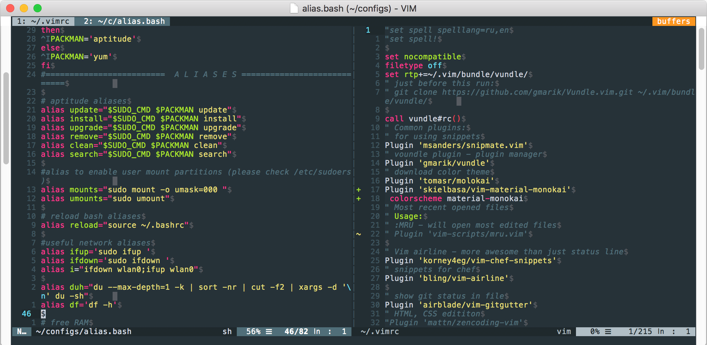
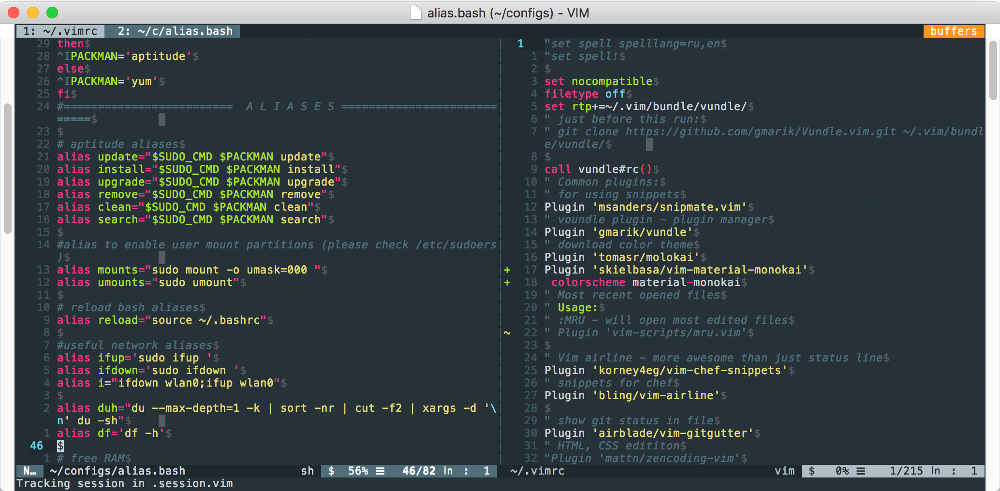
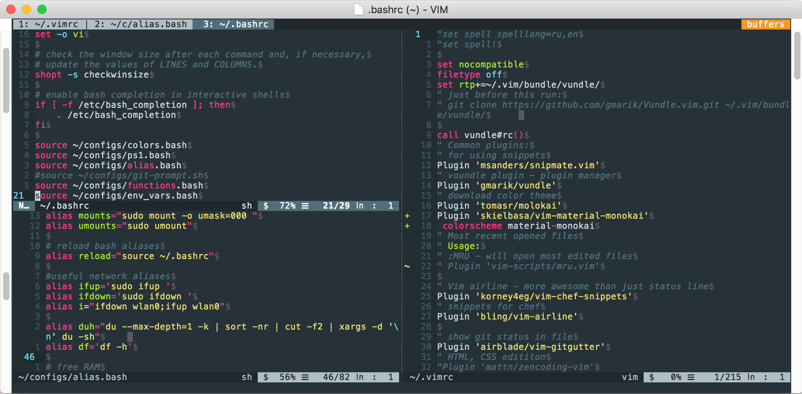
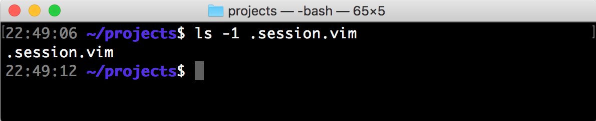
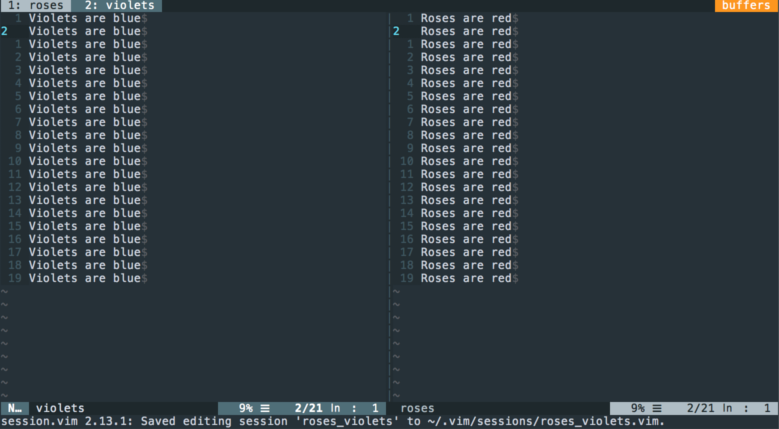
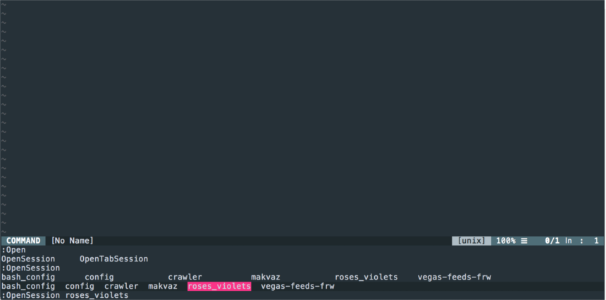

В прошлой статье мы разобрали что такое сессии в VIM и как их можно использовать. Конечно в интернете есть много плагинов для работы с сессиями и самые интересные я хочу разобрать.
vim-obsession
Ссылка на скачиваниеВ текущей папке, в которой был открыт редактор, создается файл .session.vim, куда автоматически сохраняется состояние окон и буферов.
Рассмотрим на примере:
В редакторе открыто два вертикально разделенных окна.
{kind=link}
Вводим команду :Obsession.
{kind=link}
Теперь Vim будет записывать все наши операции с окнами и буферами в файл .session.vim в текущем каталогe. Попробуем открыть ещё одно окно, но уже горизонтально.
{kind=link}
Можно спокойно закрыть редактор командой :wqa и глянуть в текущую папку
{kind=link}
Убедившись, что файл .session.vim существует в текущей папке просто открываем vim без каких-либо аргументов. Открылось тоже самое окно, даже NERDTree подсветил нужный файл (для этого нужно немного настроить его)
Для того, чтобы приостановить записывать сессию достаточно ещё раз ввести команду :Obsession.
Плюсы:
- повторяет свойство IDE запоминать все окна в текущем проекте Минусы:
- Активируется только, если vim запущен без аргументов (может это и плюс)
- Не всегда корректно открывает окна плагинов, таких как
NERDTree,ctags
vim-session
Плагин создает единую директорию и хранит там все сессии.
Посмотрим на примере:
Открываем нужные файлы в Vim, и прописываем команду:SaveSession roses_violets
{kind=link}
Сессия сохранилась в директорию ~/.vim/sessions/. Теперь можно закрыть редактор (перед выходом вылезает окно, в котором спрашивается, сохранить ли сессию или нет. Выбираем “Да”) и открыть без аргументов в домашней папке (при условии, что мы не сохраняли сессии в ней с vim-obsession). Набираем команду :OpenSession и клавиш TAB , плагин подсказывает, какие сессии можно загрузить. Плюсы:
{kind=link}
- Можно посмотреть список сессий и открыть нужную из любого места
- Много разных опций по настройке, например, название сессии по-умолчанию. Минусы:
- Не всегда корректно открывает окна плагинов, таких как
NERDTree,ctags
заключение
В заключении хочу сказать, что работа с сессиями ускоряет настройку окружения в редакторе, открытие всех нужных буферов и окон. Лично мне больше импонирует vim-obsession, хотя у vim-session тоже есть свои плюсы. В этой заметке не рассматривались ещё такие плагины:
- vim-workspace - по свойствам очень напоминает vim-obsession, просто исполняется другими командами
- vim-startify - меняет стартовое окно Vim, где показаны недавно открытые файлы, сессии или закладки. Опубликовано December 12th, 2017 , автор - Алексей Корнеев Поделиться